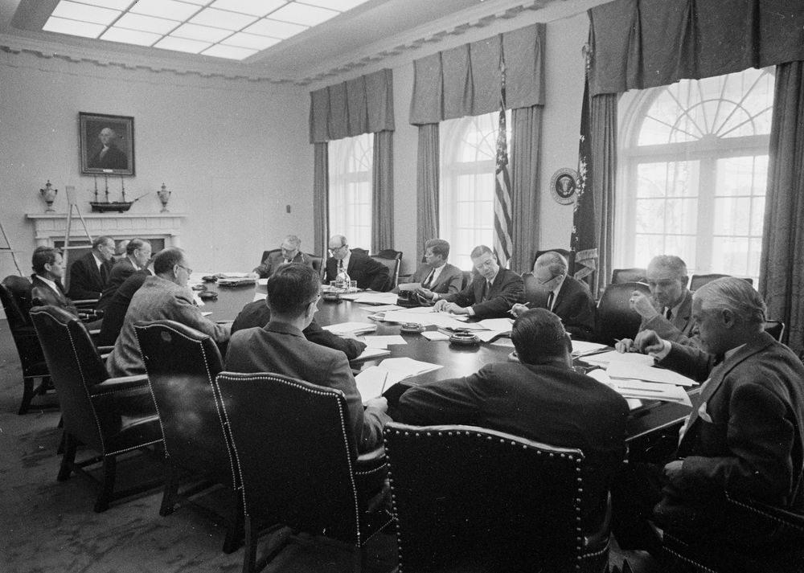
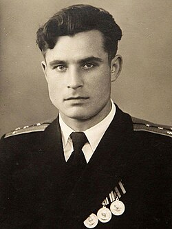

After World War II, two superpowers emerged: the United States and the Soviet Union. They became enemies in a conflict called the Cold War. In 1962, the Soviet Union secretly placed nuclear missiles in Cuba — only 90 miles from Florida. For 13 days, the world waited to see if a nuclear war would begin.
Después de la Segunda Guerra Mundial, dos superpotencias surgieron: los Estados Unidos y la Unión Soviética. Se convirtieron en enemigos en un conflicto llamado la Guerra Fría. En 1962, la Unión Soviética colocó misiles nucleares en Cuba — a solo 90 millas de Florida. Por 13 días, el mundo esperó para ver si comenzaría una guerra nuclear.

On October 16, 1962, President Kennedy was shown spy plane photos of Soviet nuclear missile sites in Cuba. The missiles could hit US cities in minutes. Kennedy secretly gathered his top advisers — called ExComm — to decide what to do. His choice would determine whether the world entered a nuclear war.
Kennedy had three options: bomb the missile sites, invade Cuba, or surround Cuba with ships. He rejected bombing because it could kill Soviet soldiers and start a war in Europe. Instead he chose a naval quarantine — US ships blocking Cuba. On October 22nd, he told the American people on television and demanded the Soviet Union remove the missiles.
El 16 de octubre de 1962, el Presidente Kennedy vio fotos de aviones espía de los sitios de misiles nucleares soviéticos en Cuba. Los misiles podían golpear ciudades de EE.UU. en minutos. Kennedy reunió secretamente a sus asesores principales — llamados ExComm — para decidir qué hacer. Su decisión determinaría si el mundo entraba en guerra nuclear.
Kennedy tenía tres opciones: bombardear los sitios, invadir Cuba, o rodear Cuba con barcos. Rechazó el bombardeo porque podía matar soldados soviéticos e iniciar una guerra en Europa. En cambio eligió una cuarentena naval — barcos de EE.UU. bloqueando Cuba. El 22 de octubre se lo dijo al pueblo americano por televisión y exigió que la Unión Soviética retirara los misiles.

Khrushchev refused to back down and sent an angry letter. Soviet ships kept moving toward the blockade. On October 24th, they suddenly stopped and turned around. Secretary Rusk whispered: "We're eyeball to eyeball, and I think the other fellow just blinked." But the crisis was not over. On October 27th — "Black Saturday" — a US spy plane was shot down over Cuba and the pilot was killed. Many generals pushed Kennedy to attack. He held back.
The solution came through secret diplomacy. Khrushchev sent two letters. Kennedy answered only the first — which offered a deal — while secretly agreeing to the second. The deal: the Soviet Union would remove missiles from Cuba, and the US would remove its missiles from Turkey and promise not to invade Cuba. On October 28th, Khrushchev agreed. The crisis was over. The world had come closer to nuclear war than ever before — or since.
Khrushchev se negó a ceder y envió una carta enojada. Los barcos soviéticos siguieron avanzando hacia el bloqueo. El 24 de octubre, de repente se detuvieron y dieron la vuelta. El Secretario Rusk susurró: "Estamos cara a cara, y creo que el otro acaba de parpadear." Pero la crisis no había terminado. El 27 de octubre — "Sábado Negro" — un avión espía de EE.UU. fue derribado sobre Cuba y el piloto murió. Muchos generales presionaron a Kennedy para atacar. Él se contuvo.
La solución llegó a través de la diplomacia secreta. Khrushchev envió dos cartas. Kennedy respondió solo a la primera — que ofrecía un trato — mientras aceptaba secretamente la segunda. El trato: la Unión Soviética retiraría misiles de Cuba, y EE.UU. retiraría sus misiles de Turquía y prometería no invadir Cuba. El 28 de octubre, Khrushchev aceptó. La crisis había terminado. El mundo había estado más cerca de la guerra nuclear que nunca.
1. Why did Kennedy reject bombing the missile sites?
¿Por qué Kennedy rechazó bombardear los sitios de misiles?
2. What made "Black Saturday" especially dangerous?
¿Qué hizo que el "Sábado Negro" fuera especialmente peligroso?
3. How was the crisis resolved?
¿Cómo se resolvió la crisis?
4. What does Rusk's quote "the other fellow just blinked" mean?
¿Qué significa la cita de Rusk "el otro acaba de parpadear"?
5. Which best describes Kennedy's overall strategy?
¿Cuál describe mejor la estrategia general de Kennedy?
"I think Kennedy's most important decision was ___ because ___."
"Creo que la decisión más importante de Kennedy fue ___ porque ___."
While Kennedy and Khrushchev negotiated, something very dangerous was happening underwater. A Soviet submarine called B-59 was hidden near Cuba. It had lost contact with Moscow for days. The crew did not know if a war had already started above the surface.
Inside the submarine, conditions were desperate. The temperature was over 100°F. The air was running out. Crew members were losing consciousness. The captain, Valentin Savitsky, had not slept for days. When US ships dropped small depth charges nearby — a signal to surface, not an attack — Savitsky believed World War III had already started. He ordered the nuclear torpedo to be prepared for launch.
Mientras Kennedy y Khrushchev negociaban, algo muy peligroso ocurría bajo el agua. Un submarino soviético llamado B-59 estaba escondido cerca de Cuba. Había perdido contacto con Moscú por días. La tripulación no sabía si ya había comenzado una guerra en la superficie.
Dentro del submarino, las condiciones eran desesperadas. La temperatura superaba los 37°C. El aire se agotaba. Los miembros de la tripulación perdían el conocimiento. El capitán, Valentin Savitsky, no había dormido por días. Cuando los barcos de EE.UU. lanzaron pequeñas cargas de profundidad — una señal para salir a la superficie, no un ataque — Savitsky creyó que la Tercera Guerra Mundial ya había comenzado. Ordenó preparar el torpedo nuclear para su lanzamiento.


Soviet protocol required three officers to authorize a nuclear launch: the captain, the political officer, and one more. Captain Savitsky said YES. The political officer said YES. But the third officer — Vasili Arkhipov — said NO. Calmly, he argued: without confirmed orders from Moscow, firing a nuclear weapon would be an unforgivable act that could trigger a nuclear exchange. He insisted the submarine surface first.
Savitsky, exhausted and furious, argued with Arkhipov. Eventually he agreed. The B-59 surfaced. US destroyers surrounded it — but both sides stood down. The torpedo was never launched. The world would not learn Arkhipov's name for forty years. When his story became public in 2002, scholar Thomas Blanton said simply: "A man named Arkhipov saved the world."
El protocolo soviético requería que tres oficiales autorizaran un lanzamiento nuclear: el capitán, el oficial político, y uno más. El Capitán Savitsky dijo SÍ. El oficial político dijo SÍ. Pero el tercer oficial — Vasili Arkhipov — dijo NO. Con calma, argumentó: sin órdenes confirmadas de Moscú, disparar un arma nuclear sería un acto imperdonable que podría desencadenar un intercambio nuclear. Insistió en que el submarino saliera a la superficie primero.
Savitsky, agotado y furioso, discutió con Arkhipov. Finalmente aceptó. El B-59 salió a la superficie. Los destructores de EE.UU. lo rodearon — pero ambos lados se detuvieron. El torpedo nunca fue lanzado. El mundo no conocería el nombre de Arkhipov por cuarenta años. Cuando su historia se hizo pública en 2002, el historiador Thomas Blanton dijo simplemente: "Un hombre llamado Arkhipov salvó el mundo."
6. What conditions inside B-59 explain why Savitsky believed the war had started?
¿Qué condiciones dentro del B-59 explican por qué Savitsky creyó que la guerra había comenzado?
7. Why was Arkhipov's position essential to preventing the launch?
¿Por qué la posición de Arkhipov fue esencial para evitar el lanzamiento?
8. What does Blanton's quote "A man named Arkhipov saved the world" suggest?
¿Qué sugiere la cita de Blanton "Un hombre llamado Arkhipov salvó el mundo"?
9. Why did the US depth charges represent a dangerous misunderstanding?
¿Por qué las cargas de profundidad de EE.UU. representaron un malentendido peligroso?
10. Which best states the main idea of Story 2?
¿Cuál expresa mejor la idea principal de la Historia 2?
"What Arkhipov did was significant because ___. Without him, ___."
"Lo que hizo Arkhipov fue importante porque ___. Sin él, ___."
✍️ Claim, Evidence & Reasoning / Afirmación, Evidencia y Razonamiento
Use evidence from BOTH stories. / Usa evidencia de LAS DOS historias.
⚠️ Use at least 4 vocabulary words. They will turn gold as you type them. / Usa al menos 4 palabras del vocabulario. Se volverán doradas cuando las escribas.